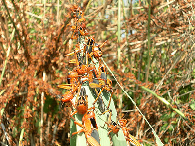
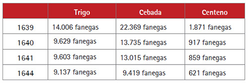

Breve historia agrícola y ganaderaAutor: Jaime Gallego MonederoAlcázar en el tiempo (2ª parte) En el Priorato de San Juan se tenía costumbre de prestar a los agricultores un tercio de los diezmos para la siembra. En el Libro de Cuentas 1612-1628 folio 90 nos encontramos la siguiente reseña: “Mas doce reales que pagó a Diego García de Siruela, vecino desta villa, porque fue a la villa de Tembleque con una carta deste Ayuntamiento para Juan García de Martín Sánchez, mayordomo del Iltrmo. Cardenal de Toledo, para que recibiese en esta villa el dinero de ciento cincuenta fanegas de trigo y ciento y ochenta fanegas de cebada que su señoría mandó dar a los labradores para sembrar, como lo refiere la libranza de noviembre del dicho año.”  Sin embargo, cuando D. Juan José de Austria se hace cargo del Priorato en 1645, esta costumbre se encontraba en retroceso. Como la renta del Priorato estaba basada en la cosecha recogida y el precio de ésta, cualquier contratiempo suponía una gran pérdida. La mayor de las preocupaciones fue la langosta que no dio tregua en la primera mitad del siglo XVII. Podemos observar como el 12 de abril de 1617 el concejo de Alcázar acordó enviar a Pedro López Zarco, regidor, para valorar la entidad de la langosta descubierta en diferentes lugares del término, dando su informe cuatro días después: “… se a dado noticia en este ayuntamy[ent]o que en los térmy[n] os desta uilla desde el Monte del Arenal a U[ill]azentenos y Mojadas de la Mancha, exidos y otras partes ay mucha cantidad de langosta y que conbiene hazer diligenzia para la destruyr y matar porque de no hacerse se espera que hará gran daño en los panes de los términos”. Es durante el quinquenio de 1640 a 1645 cuando la agricultura sufre grandes pérdidas por la mala climatología, según la relación hecha por el contador de los Prioratos: Estas condiciones dieron lugar a una fuerte caída demográfica. Además de este descenso demográfico se dio un descenso cualitativo de labradores por el aumento de los pechos y gravámenes, por la nueva expulsión de moriscos y por el mayor número de hombres llamados al ejército como refuerzo ante las rebeliones de Cataluña y Portugal. Por si fuera poco, Felipe IV había dado orden, a través del Consejo de Castilla, para que los prioratos abastecieran a la Villa de Madrid con seis mil fanegas de trigo a la tasa. La cantidad de cereal obtenida en la zona debía de ser importante para poder mantener en funcionamiento, en otoño e invierno, los molinos de agua del Xigüela denominados Hernando Díaz, del Doctor y La Herrera; y del Guadiana, denominados El Exado, primero en el camino de Alcázar a Argamasilla, y, más adelante, el del Cuervo, propiedad del Gran Prior, y, durante todo el año, los molinos de viento, que ya empezaban a conformar el paisaje que nos describiría Cervantes en Don Quijote de la Mancha y de los que ya se daba razón en el número 1 de esta revista. En 1782 se proponía llevar el regadío a todos los pueblos del Priorato, lo que supondría una mejora radical de la agricultura. “D. Gabriel adoptó un proyecto que le propuso el arquitecto D. Juan de Villanueva para dar riego copioso a inmensas tierras de los pueblos del Gran Priorato de San Juan con las aguas del Río Guadiana sin más contribución que la precisa para mantener las obras que debían ejecutarse…”. El depósito general de las aguas y el principio del canal se situaría en la laguna de Miravetes (actual Cenagosa). El curso del Canal se dirigiría hacia el Castillo de Peñarroya donde conectaría con el antiguo Canal del Gran Prior, adentrándose en los términos de las villas de Argamasilla, Cervera, Alcázar, Villacentenos y, desde aquí, hacia Herencia, Villarta y Arenas de San Juan, en los límites del Priorato. Entre 1782 y 1790 las obras llegarían hasta Villacentenos, donde quedarían detenidas para siempre. Puente del Gran Prior existente en Alameda de Cervera. Uno de los pocos restos que quedan del Canal. |
 Revista San Isidro 2023 |
BREVE HISTORIA AGRÍCOLA Y GANADERA (2ª Parte)
En el Priorato de San Juan se tenía costumbre de prestar a los agricultores un tercio de los diezmos para la siembra.
En el Libro de Cuentas 1612-1628 folio 90 nos encontramos la siguiente reseña:
“Mas doce reales que pagó a Diego García de Siruela, vecino desta villa, ...
En el Priorato de San Juan se tenía costumbre de prestar a los agricultores un tercio de los diezmos para la siembra.
En el Libro de Cuentas 1612-1628 folio 90 nos encontramos la siguiente reseña:
“Mas doce reales que pagó a Diego García de Siruela, vecino desta villa, ...

EL HISTORIAL CAMPESINO
Fácil es señor doctor,
decir no bebas más vino
y que difícil que es
para el que nació campesino.
Yo que desde muy pequeño
dediqué mi vida entera
y en darle puse mi empeño,
rango, prestigio y solera..
Fácil es señor doctor,
decir no bebas más vino
y que difícil que es
para el que nació campesino.
Yo que desde muy pequeño
dediqué mi vida entera
y en darle puse mi empeño,
rango, prestigio y solera..
ALGUNOS MILAGROS DE SAN ISIDRO
No todos sabrán de la gran cantidad de milagros que se le atribuyen a San Isidro Labrador, muchos de ellos, post mortem. Cuatrocientos treinta y ocho milagros en total, de los cuales vamos a contar aquí los más conocidos.
No todos sabrán de la gran cantidad de milagros que se le atribuyen a San Isidro Labrador, muchos de ellos, post mortem. Cuatrocientos treinta y ocho milagros en total, de los cuales vamos a contar aquí los más conocidos.
SOLAMENTE HACE 50 AÑOS ...
Tuvo lugar una catástrofe climatológica en toda la zona de La Mancha. Un gran frente frío cruzó toda la Península dejando fuertes heladas y copiosas nevadas que hizo que durante varios días la nieve se quedara congelada sobre todos los cultivos de la zona.
En esos días, concretamente durante los días del 19 al 22 de Febrero de 1.965 ...
Tuvo lugar una catástrofe climatológica en toda la zona de La Mancha. Un gran frente frío cruzó toda la Península dejando fuertes heladas y copiosas nevadas que hizo que durante varios días la nieve se quedara congelada sobre todos los cultivos de la zona.
En esos días, concretamente durante los días del 19 al 22 de Febrero de 1.965 ...
| Teléfono: 654 53 82 29 (Jesús) Casa Parroquial de la Iglesia de San Francisco Plaza de San Francisco, s/n 13600 - Alcázar de San Juan (Ciudad Real) |
Síguenos en |